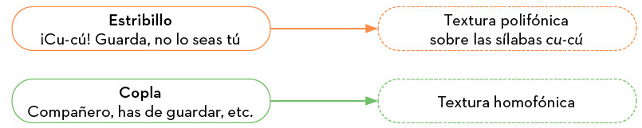

Chanson y Madrigal
Mientras que en la música religiosa del periodo renacentista se creó un estilo internacional, en la música profana surgieron diversos estilos propios asociados a cada nación o zona geográfica. Los dos géneros musicales que más relevancia tuvieron durante el Renacimiento fueron el madrigal en Italia y la chanson en Francia. Sus características son:
| Chanson | Textos en francés, sencillez melódica al gusto del pueblo, a cuatro o cinco voces; temática variada (amor, sátira, etc.). |
| Madrigal | Textos poéticos en italiano, a cuatro o cinco voces; habitualmente de temática amorosa. |

ESCUCHAMOS PERO NO JUZGAMOS: MADRIGAL Y CHANSON
Chanson
Escucha el siguiente fragmento de Chanson: Le chant des oyseaulx y responde a las siguientes preguntas:
Clément Janequin - Le chant des oyseaulx
- ¿Por qué crees que la obra tiene ese nombre?
- ¿En qué idioma está escrito?
Madrigal
Escucha el siguiente madrigal del compositor Arcadelt.
Arcadelt - Il bianco e dolce cigno
¿En qué se diferencia un motete de esta pieza?
Villancicos y Falas
Ya sabes que en Italia se desarrolló el madrigal y en Francia la chanson. En esta ocasión realizarás un viaje musical por otras dos zonas geográficas, España e Inglaterra, para descubrir nuevos géneros.
| Villancico | Textos en español. Nada tiene que ver con nuestros villancicos de Navidad. Se basaba en la alternancia de dos partes, denominadas estribillo y copla, cuya temática solía ser amorosa o picaresca. |
| Falas | En Inglaterra se hicieron muy populares unas canciones que contenían partes musicales desarrolladas sobre las sílabas fa-la-la; por eso se denominaron popularmente Falas. |

Estructura del Villancico "¡Cú-Cú!" que puedes escuchar en las siguientes audiciones.
| El villancico religioso nació cuando la Iglesia Católica apropió las canciones populares profanas del pueblo y les cambió la letra para difundir el mensaje cristiano. |
En el caso de las Falas, tenemos una nueva textura presente, la homofonía. Esta ocurre cuando todas las voces o instrumentos se mueven juntos al mismo ritmo, pero cantando o tocando notas diferentes para formar acordes. En las siguientes audiciones podrás identificar qué partes son polifónicas y cuales homofónicas.
ESCUCHAMOS PERO NO JUZGAMOS: VILLANCICOS Y FALAS
Villancico
Escucha un fragmento del villancico Cu-cú, de Juan del Encina.
- ¿Puedes entender el texto de este villancico? ¿De qué trata?
- ¿Diferencias bien el Estribillo de la Copla? ¿Qué textura tiene cada parte?
Falas
Escucha el siguiente fala del compositor Thomas Morley..
Thomas Morley - Now Is the Month of Maying
- ¿En qué parte de la pieza la textura pasa de ser homofónica a polifónica?